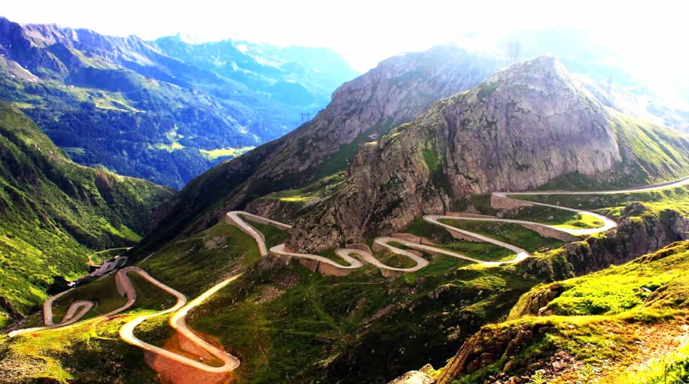
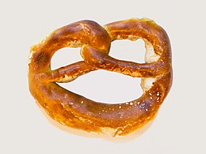
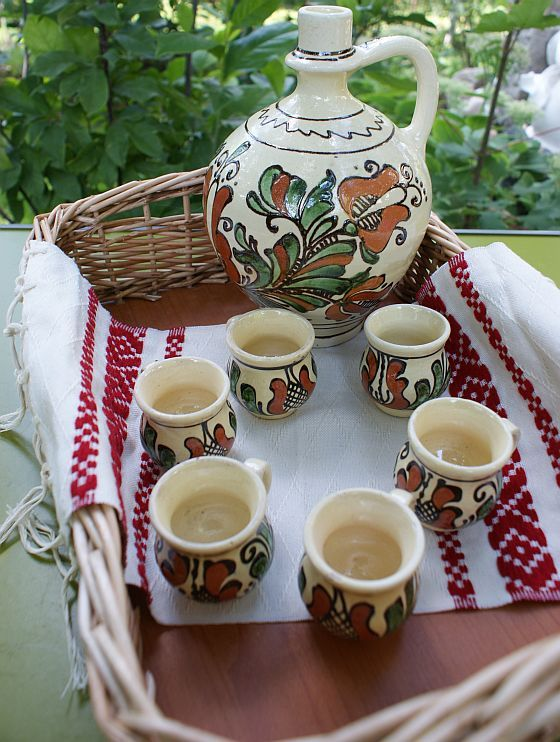

Unspoken rules
Romania

- Remember to take your shoes off whenever entering a house. Romanians love carpets and are quite keen on keeping them clean.

- The Dracula Castle? Go without expectations. You’ll probably want to see something spectacular only your imagination reading Stoker can create

- This connects to the previous point: there are lots of beautiful castles around Transilvania. Go explore them. Peles is just an example.
- Have you ever had a pretzel for less than 20 pence? Well, this is one of the typical Romanian street food. It generally has different fillings, either savory or sweet.

- In opposition to what is said about Eastern Europe, Romanians are very welcoming and warm. They are great hosts and will offer you a great deal of food and alcohol. Do not say no.

- When they are offered something, Romanians will be prone to say “no” at first. This does not mean they don’t want what they’re being offered and they probably expect you to insist. Same the other way around, they will insist on making you accept what they are offering.
- Palinca/Rachiu (and other local names) will serve as an appetite stimulator, have it before your meal.
